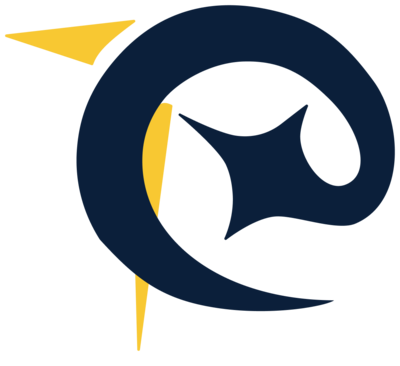
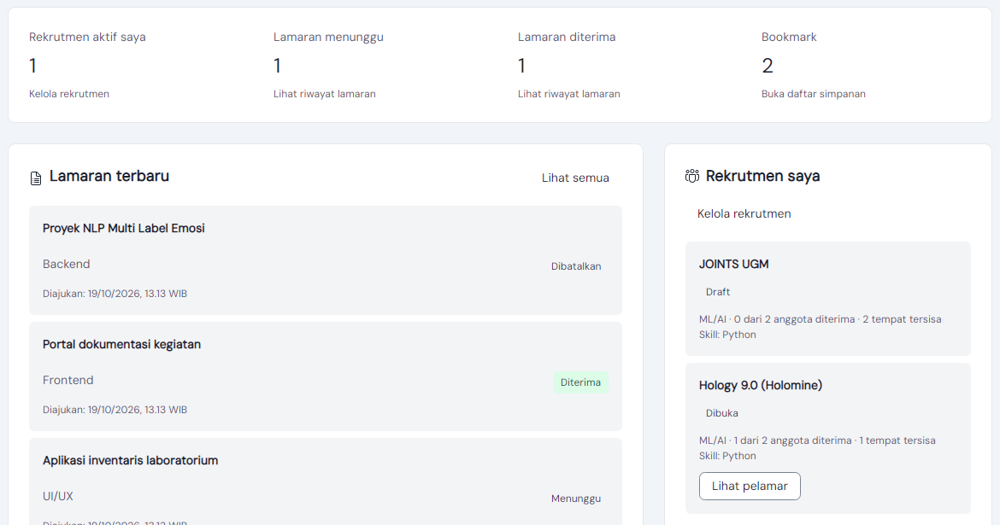
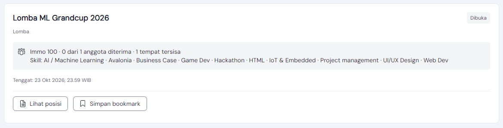
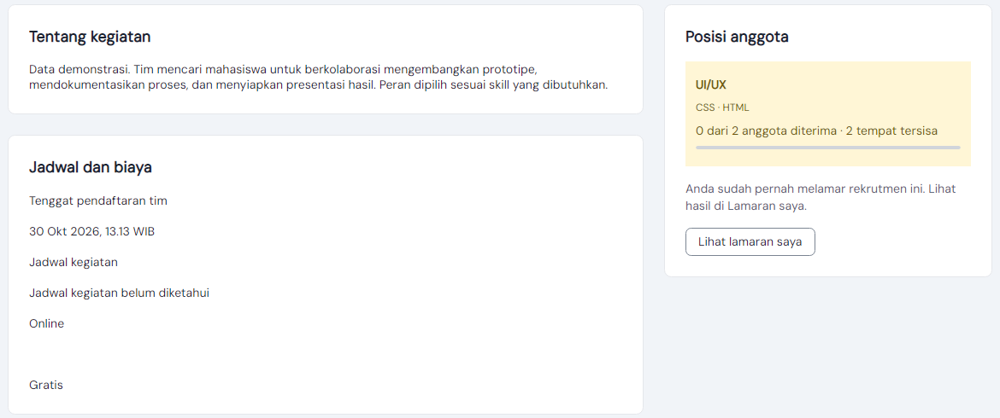

Temukan tim.
Mulai kolaborasi.
Aplikasi desktop untuk mahasiswa yang sedang mencari anggota tim lomba atau proyek, mencari tim untuk diikuti, atau mencari mentor sesuai keahlian.
- Mata kuliah
- PBKK D, Evaluasi Tengah Semester
- Disusun oleh
- Hosea Felix Sanjaya, 5025241177
- Platform
- Desktop Ubuntu dan Windows
- Teknologi inti
- C#, .NET 10, Avalonia, SQL Server
Kenapa ETC dibuat
Mencari anggota tim lomba atau proyek biasanya lewat grup chat dan poster yang cepat tenggelam. Posisi apa yang dicari, skill apa yang dibutuhkan, kapan tenggatnya, dan siapa yang sudah diterima tidak tercatat di satu tempat.
Pelamar juga sering tidak tahu apakah lamarannya sudah dibaca, diterima, atau ditolak.
ETC mempertemukan mahasiswa yang merekrut dengan mahasiswa yang mencari tim, dan menyimpan hasil seleksi agar kedua pihak membaca status yang sama.
| Masalah | Jawaban di ETC |
|---|---|
| Kebutuhan anggota tim tidak dijelaskan dengan rapi. | Rekrutmen berisi kegiatan, posisi, skill, kuota, tenggat, biaya, dan kontak. |
| Sulit memilah kesempatan yang relevan dan masih buka. | Pencarian dan filter kategori, posisi, skill, ketersediaan, plus bookmark. |
| Pembuat kehilangan jejak siapa melamar ke posisi mana. | Daftar pelamar per posisi dengan profil, pesan, dan tombol Terima atau Tolak. |
| Pelamar tidak tahu hasil lamarannya. | Halaman Lamaran saya menampilkan status, waktu pengajuan, dan detail kegiatan. |
| Informasi mentor tersebar dan sulit dicari per keahlian. | Direktori mentor dengan foto, skill, pengalaman, dan tautan Google Form. |
Satu akun, dua peran
Tidak ada akun khusus perekrut atau pelamar. Mahasiswa yang sama bisa membuka rekrutmen untuk lomba A sambil melamar ke tim lomba B. Hak akses ditentukan oleh siapa pemilik datanya.
Merekrut anggota
- Lengkapi profil: nama, angkatan, dan minimal satu skill.
- Buat draft rekrutmen, isi posisi beserta kuota dan skill.
- Publikasikan setelah tenggat, kontak, dan mode kegiatan valid.
- Tinjau pelamar per posisi, lalu Terima atau Tolak.
- Tutup rekrutmen saat tim sudah lengkap.
Melamar ke tim lain
- Cari rekrutmen, filter berdasarkan kategori, posisi, atau skill.
- Buka detail, simpan ke bookmark kalau belum yakin.
- Pilih satu posisi, tulis pesan perkenalan dan portofolio.
- Pantau hasilnya di halaman Lamaran saya.
- Batalkan selama status masih Menunggu.
Akun dan profil
Register, login, logout dengan konfirmasi. Profil berisi foto, angkatan, skill, bio, pengalaman, dan tautan portofolio.
Dashboard
Rekrutmen aktif, lamaran menunggu, lamaran diterima, dan jumlah bookmark milik akun sendiri.
Cari rekrutmen
Cari judul atau nama kegiatan, filter, dan pagination 12 item per halaman. Default hanya yang masih menerima lamaran.
Rekrutmen saya
Buat, edit, publikasikan, tutup, dan hapus draft. Posisi dan kuota terkunci setelah ada pelamar.
Lamaran dan seleksi
Kirim dan batalkan lamaran. Pemilik membaca pelamar per posisi, lalu menerima atau menolak.
Bookmark dan mentor
Simpan rekrutmen untuk dibuka nanti. Direktori mentor bisa dicari per nama atau skill.
Aturan yang dijaga aplikasi
- Lamaran hanya diterima jika rekrutmen Dibuka, belum lewat tenggat, dan posisi belum penuh.
- Satu mahasiswa hanya punya satu lamaran per rekrutmen, dan tidak bisa melamar posting sendiri.
- Penerimaan berjalan dalam transaksi SQL, jadi dua penerimaan bersamaan tidak melebihi kuota.
- Waktu disimpan dalam UTC dan ditampilkan dengan label WIB.
Di luar ruang lingkup
- Chat, notifikasi real-time, dan email otomatis.
- Pembayaran. Biaya lomba hanya informasi.
- Pencocokan otomatis. Pembuat menilai sendiri.
- Panel admin dan akun khusus mentor.
Bagi pembuat rekrutmen
Satu posting menjangkau pelamar yang skill-nya cocok. Kuota tidak bisa terlampaui karena penerimaan dicek di database.
Bagi pelamar
Hanya melihat posisi yang masih menerima lamaran, lalu bisa memantau hasilnya tanpa bertanya ulang ke pembuat.
Bagi yang butuh arahan
Mentor bisa dicari berdasarkan nama atau skill, lalu diajukan lewat formulir.
Tampilan aplikasi
Diambil langsung dari ETC yang dijalankan dengan data demo.


